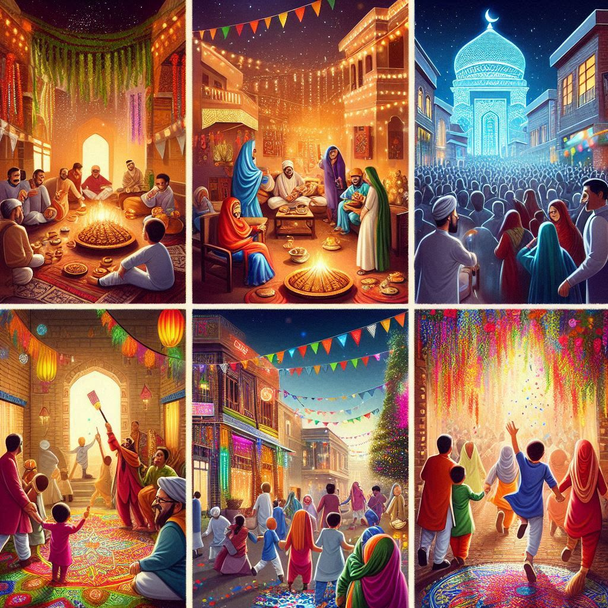
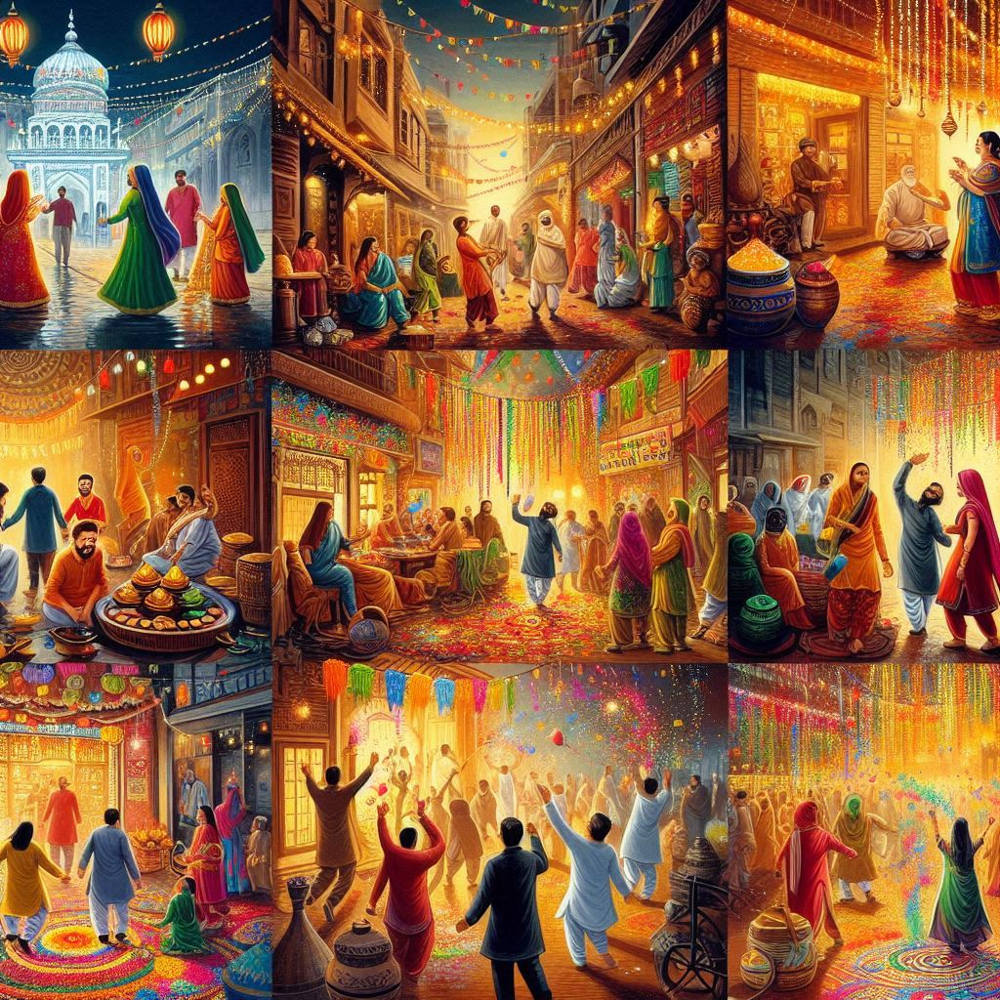

Delhi is a vibrant city that celebrates a wide variety of festivals throughout the
year, reflecting its rich cultural diversity and heritage. Here’s an overview of some of the major festivals
celebrated in Delhi:
1. Diwali
Festival of Lights: Diwali, celebrated by Hindus, Sikhs, and Jains, symbolizes the victory of light
over darkness. People decorate their homes with diyas (oil lamps) and rangoli (colorful designs on the
floor) and burst fireworks.
Celebrations: The atmosphere is festive, with markets bustling and families gathering for prayers,
feasts, and exchanging sweets and gifts.
2. Holi
Festival of Colors: Holi marks the arrival of spring and is celebrated with vibrant colors, water
balloons, and joyful gatherings. People throw colored powders (gulal) at each other, dance, and enjoy
festive foods.
Cultural Significance: Holi also symbolizes the triumph of good over evil, commemorating the legend
of Prahlad and Holika.
3. Eid
Religious Significance: Eid is celebrated by the Muslim community after the holy month of Ramadan. It
involves special prayers at mosques, feasting, and sharing with the less fortunate.
Food: Traditional dishes like biryani, kebabs, and sheer khurma (a sweet dish) are commonly prepared.
4. Navratri and Durga Puja
Celebration of the Goddess: Navratri is a nine-night festival dedicated to the worship of Goddess
Durga. In Delhi, it often involves traditional dance forms like Garba and Dandiya.
Durga Puja: While it is more prominent in West Bengal, Delhi also sees elaborate Durga Puja
celebrations, particularly in areas with significant Bengali communities, featuring beautifully crafted
idols and cultural performances.
5. Janmashtami
Birth of Lord Krishna: This festival celebrates the birth of Lord Krishna with devotional songs,
dances, and dramatic reenactments of his life, including the famous Dahi Handi event, where teams form human
pyramids to break a pot of curd.
Celebrations: Temples and homes are decorated, and people fast and participate in midnight prayers.


6. Baisakhi
Harvest Festival: Primarily celebrated by the Sikh community, Baisakhi marks the Punjabi New Year and
the harvest season. It is an important festival for farmers.
Celebrations: People visit gurdwaras, participate in community feasts (langar), and enjoy traditional
dances like Bhangra and Gidda.
7. Christmas
Celebration of the Birth of Jesus Christ: Christmas is celebrated with enthusiasm by the Christian
community in Delhi. Homes and churches are decorated with lights and Christmas trees.
Festivities: Carol singing, midnight masses, and festive meals featuring cakes, cookies, and
traditional dishes are part of the celebration.
8. Guru Nanak Jayanti
Birth of Guru Nanak: This important Sikh festival celebrates the birth of Guru Nanak, the founder of
Sikhism. It involves prayers, hymns, and community service.
Processions: The celebrations often include processions known as Nagar Kirtan, where devotees sing
hymns and distribute prasad (blessed food).
9. Makar Sankranti
Harvest Festival: Celebrated in mid-January, Makar Sankranti marks the transition of the sun into the
zodiac sign of Capricorn. It is associated with harvest celebrations across India.
Traditions: People fly kites, take holy dips in rivers, and prepare sweets made of sesame and
jaggery.
10. Dussehra (Vijayadashami)
Victory of Good over Evil: Dussehra celebrates the victory of Lord Rama over Ravana, symbolizing the
triumph of good over evil. It is marked by the burning of effigies of Ravana.
Ramlila: Theatrical reenactments of the Ramayana, known as Ramlila, are performed in various parts of
the city, culminating in the burning of effigies.
Conclusion
Delhi’s festivals are a vibrant reflection of its cultural diversity and rich heritage. Each festival brings
communities together, fostering a sense of unity and celebration among the city’s residents. From the
colorful exuberance of Holi to the serene lights of Diwali, these festivals showcase the spirit and
traditions that define Delhi. Whether you’re participating in the festivities or simply observing,
experiencing these celebrations is a highlight of visiting the capital.